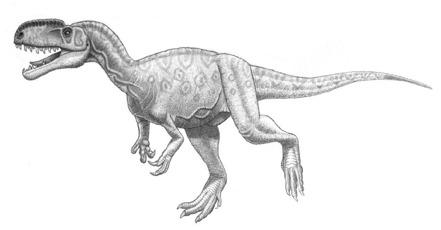
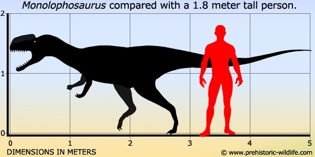

An almost complete skeleton of Monolophosaurus was discovered in the Canadian-Chinese expeditions (1981-1984). This fossil was however anonymous until Dong Zhiming in 1992 and Wane Grady in 1993 named this fossil as Monolophosaurus. However these namings lacked proper descriptions and hence were considered invalid. In 1993-94 finally Zhao Xijin and Philip John Curie named and described Monolophosaurus jiangi.

genus
The only species known till date is Monolophosaurus jiangi. Fossil studies show that these lizards generally measured five meters in length and weighed something around one thousand and five hundred pounds. It is believed that Monolophosaurus generally hunted in packs although scientific evidence is still lacking. Fossil studies indicate them to be crested dinosaurs like Dilophosaurus and they were related.
The genus name comes from the presence of single crest on the snout. And the species name has its reference from Jiangjunmiao. This is the name of temple (locally called miao) of the general ( named jiangjun). Local folklore suggested the body of the general was found there.
Fossils
Several distinguishing features have been observed in the fossils of Monolophosaurus. There is the presence of a large crested snout on the midline. This crest was formed from the Premaxilla and it continued over the nasals and lacrymals and the rear almost touched the frontals and is parallel to the upper jaw edge. The ascending premaxillary branches have a forked ending. Another distinguishing feature is the presence of a premaxillary deep groove present over an opening in the ascending branch and ending towards an opening just below the nostrils. There is also the presence of two unequal sized pneumatic openings within the depression and around the upper rear nostril. There was also the presence of a hatchet shaped process that was somewhat pointing upwards and was located just at the rear branch of the lacrimals and above the eye socket.
Monolophosarus's Diet
Monolophosaurus was a medium-sized meat-eater from China that lived during the Jurassic Period. It had lots of sharp teeth and a big, skinny head.
Physical Charactaristics

It is interesting to note that the holotype skull was somewhat flat in shape but was almost reconstructed shape wise by the large snout. This snout covers almost three quarters of the skull and spreads almost up to the eye socket. Studies have revealed that the crest starts from the snout tip of the premaxilla and it is also observed that they are formed of nasal bones. This crest has a triangular cross section in the transverse end and is characterized with a broader base and a narrower but flat upper surface. The upper rear part of the depression that is formed around the antorbital fenestra is due to the nasal bones. Pneumatic openings characterizing the presence of diverticula of air sacs were abundant within this area. Two small foramina are also present in this portion. Basically advanced studies have revealed that the nasal bone and even the jugal bone were heavily hollow or pneumatised. They had an I-shaped lacrimal and a small horn was even present behind the eye socket.
The vertebral column was having nine cervical, fourteen dorsal and five sacral vertebrae. However it is worth mentioning that the number of tail vertebrae remains unknown till date. However biophysical studies suggest the tail base to be in a slightly downward orientation.
The pelvis is characterized by the presence of a convex ilium that has a hook shaped front blade. There has been no evidence regarding the presence of the brevis shelf. The pubic bones and the Ischia are quite interestingly similar to each other as each and e very pair of them are connected by bony skirts and are pierced through by a foramen.
To conclude however it is disheartening to see that Monolophosaurus has not grabbed the eye candy status of the general public when compared to its cousin Dilophosaurus. Though both of these dinosaurs belong to the Allosaurus clan, Monolophosaurus was considered to be slightly bigger in size when compared to Dilophosaurus and probably a more dangerous theropod.
Habitat
Habitat was characterized by a mix of
terrestrial and lacustrine (lake) environments.
Fossils of Monolophosaurus have been found
in the Shishugou Formation of Xinjiang, China.
This formation includes a variety of sedimentary
deposits, indicating that the region had diverse
ecosystems during the time when the Monolophosaurus
roamed.
Location Fossils Found
Monolophosaurus fossils have been discovered
in the Shishugou Formation of Xinjiang, China.
The Shishugou Formation is a geological
formation that dates back to the Middle
Jurassic period, approximately 170 million
years ago. Therefore, Monolophosaurus lived
in what is now the Xinjiang region of China
during this ancient time.


.jpg)